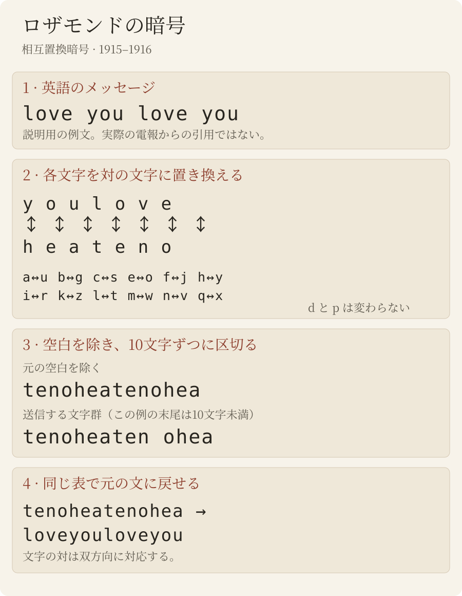

新発見
ロザモンド電報
1915年と1916年、日本の当局は意味をなさない単語でできた電報を二十二通書き写した——heaitolloi、coohavbhea、tenocrszqu——宛先は上海あるいは東京の「Rosamonde（ロザモンド）」である。電報は訳もないまま文書館に眠っていた。実はこれは英語で、単純な文字の置き換えによって暗号化されている。私たちの知る限り、孫文と宋慶齢（「Rosamonde」）が直接交わした通信として知られる最も古いものであり、二人の結婚の八か月前にさかのぼる。

史料
1913年から1917年にかけて、逓信省通信局は、東京に亡命していた孫文の周辺が送受信した電報を外務省のために系統的に書き写させた。その写しが外交史料館所蔵の「特定人ノ発受郵便物取調」の系列で、アジア歴史資料センター（JACAR）がデジタル化している。
1915年の二冊（JACAR B03050087600、B03050087700）には、中国語電信符号の電報とは別種の電報がある。子音と母音が規則なく混じる十文字の単語で、同じ文字列（hea、lyu、ound）が繰り返し現れる。発信は東京から頭山満（孫文の隣人であり庇護者）の名義で、宛先は上海の二つの住所——「Laisaosang, 445 Chaoufoong Road」と「Rosamonde, 628 E. Yuhang Road」——であり、1916年には上海と「Rosamonde Tokio」の間を行き来する。写しにはいずれも訳が付いていない。

暗号方式：英語を一文字ずつ置き換える

平文は電報体の英語で、空白を除いて十文字ずつに区切られている。各文字は相互に入れ替わる対の表の相手の文字に置き換えられる。暗号化と復号に同じ表を使う。
a↔u b↔g c↔s e↔o f↔j h↔y i↔r k↔z l↔t m↔w n↔v q↔x — d と p はそのまま
上表は基本の置換を示す。1915年の用紙では、pに対して予想される暗号字母の代わりにqを使う例もある。3月6日に再読されたqqは英文で[pp]と記す。この用法を記録し、相互置換表を暗黙に変更しない。
したがって you は hea、love は teno と書かれる。1915年3月に Rosamonde 宛てに送られた平文の電報のいくつかは、署名が「teno」だけである。人名、数字、返信先は平文のまま残される（「Inuzuka」「100000」）。

1915年2月〜7月
書かれたとおりに翻字し、電報の略語も残す（ye は you、Yoko は横浜）。角括弧は訂正（書写の混同）または補った文字、「……」は読めなかった部分。2月21日の電報では、happy の語が暗号の中に平文のまま置かれている。日本語は私たちの訳。
| 日付 | 発信 → 受信 | 解読文 |
|---|---|---|
| 17/2/1915 | 東京 → Laisaosang 孫文 → 宋慶齢 | Your letter [o]f the eight received. My life is [s]afe agai[n], I [ha]ve to thank you. Did you get my l[a]st cable?8日付の手紙を受け取った。私の命はまた無事だ、あなたに感謝しなければならない。私の前の電報は届いたか。 |
| 20/2/1915 | 東京 → Rosamonde, 628 E. Yuhang Road（署名「Hata」） 孫文 → 宋慶齢 | Must an[s]wer cable to Chu's yesterday. HATA昨日、朱のところへ送った電報に返事をしなければならない。 |
| 21/2/1915 | 東京 → Laisaosang 孫文 → 宋慶齢 | I am so happy, tha[n]k[s] to you.とても幸せだ、あなたのおかげで。 |
| 23/2/1915 | 東京 → Laisaosang 孫文 → 宋慶齢 | Yes, I'll save you or die myself if fail. But you must b[e] strong too.そうだ、あなたを救う。失敗すれば私が死ぬ。だがあなたも強くあらねばならない。 |
| 25/2/1915 | 東京 → Laisaosang 孫文 → 宋慶齢 | With de[vou]t love I ask ye to throw of[f] Yung at once. If not I will surely die. I could throw of[f] … and sacrificed 100000 yu[a]n for you. Why are you [t]roubl[e] over a house a[n]d automobile? Now the [q]ues is: are you go[i]ng to cut h[i]m?敬虔な愛をもって願う、ただちに Yung と手を切ってほしい。さもなければ私はきっと死ぬ。私は……を捨て、あなたのために十万元を犠牲にすることができた。なぜ家と自動車のことで悩むのか。今の問題は、あなたが彼と縁を切るかどうかだ。Yung：宋慶齢の求婚者の一人で、父親が望んでいた相手だった可能性がある。漢字名は分かっていない（下記参照）。 |
| 26/2/1915 | 東京 → Laisaosang 孫文 → 宋慶齢 | Whenever ye see Yung you inflict tor[t]ure [u]pon me, and the [p]ain will surely react on you more i[n]tens[e], for our souls are mingled i[n]to one. You can't esca[p]e.あなたが Yung に会うたびに、私は責め苦を受ける。その苦しみはいっそう強くあなたに跳ね返るだろう。私たちの魂は一つに溶け合っているのだから。あなたは逃れられない。 |
| 3/3/1915 | 東京 → Laisaosang 孫文 → 宋慶齢 | Thirst[y] for hearing from you. An[s]wer.あなたの便りに飢えている。返事を。 |
| 1915年3月6日 | 東京 → Laisaosang 孫文 → 宋慶齢 | I a[pp]rehend you going to desert me. Is it true? Tell definitely once for all to me. I shall a[pp]reciate you more for the honesty.あなたが私を見捨てるのではないかと案じている。本当か。はっきりと、きっぱり言ってほしい。正直に言ってくれれば、なおさらあなたを尊敬する。 |
| 1915年3月7日 | 東京 → Laisaosang 孫文 → 宋慶齢 | Why not give me comforts?なぜ慰めてくれないのか。 |
| 9/3/1915 | 東京 → Laisaosang（30語） 孫文 → 宋慶齢 | [J]oy and ho[p]e return to me with your cable yes[ter]day. Many tha[n]k[s]. I just goin[g] … I a[m] well and sound usual. E[x]ecu[t]e your agreement at once, I b[i]d you [e]agerly. Your father su[r]prised me by a cal[l] t[h]is morni[ng].（中間部分は未解読）昨日のあなたの電報で、喜びと希望が戻ってきた。ありがとう。ちょうど……するところだ。私はいつも通り元気だ。すぐに約束を実行してほしい、切に願う。今朝、あなたの父上が訪ねてきて驚いた。 |
| 11/3/1915 | 東京 → Laisaosang 孫文 → 宋慶齢 | What make ye cabled me so urgent yesterday? Re[p]ly by ci[p]her. Must write it at home, never do it in office, for [t]hey see. You don't use code book, so they can get our secrets by guessing. Write me often, [p]lease do.なぜ昨日あんなに急いで電報をよこしたのか。暗号で返事を。必ず家で書くこと、事務所では決して書かないこと、彼らが見ているから。あなたは暗号書を使わないので、彼らは推測で私たちの秘密を知りうる。たびたび手紙を。 |
| 12/3/1915 | 東京 → Laisaosang 孫文 → 宋慶齢 | Shall I tell father that you coming by Korea? Answ[er].あなたが「コリア号」で来ると、父上に伝えようか。返事を。 |
| 15/3/1915 | 東京 → 「Miss Nit」、「コリア号」（無線） 孫文 → 宋慶齢 | Who coming with you? Do father know when to meet ye? Are you land Kobe or Yoko? Re[p]ly [q]uick so that I may know what to do for your landing. Love.誰と一緒に来るのか。父上は迎えの日時を知っているか。神戸で上陸するのか、横浜か。上陸の手配ができるよう、すぐ返事を。愛をこめて。 |
| 10/6/1915 | 東京 → Laisaosang 孫文 → 宋慶齢 | Are you forgot me? Why not write and se[n]d the [p]hoto?私を忘れたのか。なぜ手紙を書いて写真を送ってこないのか。 |
| 7/7/1915 | 上海 → Rosamonde, Tokio 宋慶齢 → 孫文 | Lovesick … in torture. Be merciful. Come or free me forever.恋に病み……責め苦の中にいる。慈悲を。来て、さもなくば永遠に私を解き放って。 |


1916年5月

1916年4月、孫文は袁世凱に対する蜂起を上海から指揮するため日本を離れた。妻となっていた宋慶齢は、はじめ東京にとどまった。同じ暗号がすぐに再び現れる（これらの電報は、鍵が見つかる前に先入観なしに翻字されたもの）：
| 日付 | 発信 → 受信 | 解読文 |
|---|---|---|
| 1/5/1916 | 長崎 → Rosamonde, Tokio 孫文 → 宋慶齢 | [In]te[n]s[e] love a[n]d ma[n]y k[is]ses to you.熱烈な愛と、あなたにたくさんのキスを。 |
| 4/5/1916 | 上海 → Rosamonde 孫文 → 宋慶齢 | Safel[y] la[n]d Fre[n]ch concess[i]on yesterday, no[w] very busy now. Love from devoted husba[nd].昨日、フランス租界に無事上陸した。今はとても忙しい。献身的な夫より愛をこめて。 |
| 8/5/1916 | 東京 →「Junzaburo」、上海（用紙の署名「中山」） 宋慶齢 → 孫文（推定） | [I]s [i]t true y[o]u are going to Canton soon?近く広東へ行くというのは本当か。 |
| 10/5/1916 | 上海 → Rosamonde 孫文 → 宋慶齢 | [I] not go to Canton. You can come here an[y] t[i]me, b[u]t do[n]'[t] take iro[n] trunk, leave [i]t to Mr Inuzuka's care. Do you understand?私は広東へは行かない。いつでもこちらへ来てよいが、鉄の箱は持ってこないこと。犬塚氏に預けなさい。わかったか。 |
| 11/5/1916 | 上海 → Rosamonde 孫文 → 宋慶齢 | D[a]rl[ing], have you [r]eceive cable a[sk] [y]ou to come he[r]e a[n]d do you know that iron trunk mus[t] be g[i]ve[n] to M[r] Inuzuka to take care. Love a[n]d k[is]ses to m[y] own w[i]f[e].愛しい人よ、こちらへ来るようにという電報は受け取ったか。鉄の箱は犬塚氏に渡して預かってもらわねばならないことを知っているか。わが妻に愛とキスを。 |
| 12/5/1916 | 上海 →「Nakayama, 109 Harajuku, Tokio」 孫文 → 宋慶齢 | Cha[ng] K[i] [r]etur[n] Tok[i]o [i]s not true. D[i]d y[o]u [re]ceive two former ca[bl]es ask you to come back a[n]d g[i]ve the iro[n] tru[n]k [to] M[r] Inuzuka's [c]are? Have y[ou] done so? Fo[r] [I] [a]m very [anxi]ous about the t[r]unk, fo[r] [i]t [i]s ve[ry] d[an]ge[r]ou[s] fo[r] [y]ou to take [i]t yourself. Do [y]o[u] [q]uite cl[e]a[r] w[h]at [I] mea[n]? A[ns]wer at once. Husb[and]. address Murai 317 JoffraChang Ki（張継か）が東京に戻ったというのは事実ではない。戻ってきて鉄の箱を犬塚氏に預けるようにという先の二通の電報を受け取ったか。そうしたか。私はその箱のことがとても心配だ。あなたが自分で運ぶのはとても危険だから。私の言うことがよくわかったか。すぐ返事を。夫。宛先：Murai、317 Joffre。 |
| 13/5/1916 | 東京 →「Junzaburo」、上海（用紙の署名「中山」） 宋慶齢 → 孫文（推定） | [Pl]ease tell [T]ai h[i]s w[i]fe com[in]g also. Rosamonde. Porthos.Tai（戴季陶か）に、彼の妻も一緒に行くと伝えて。Rosamonde。Porthos（船名）。 |
角括弧内の文字：用紙が別の文字で書いている、または書き落としている文字。2026年10月15日の画像での確認により、これらは読みの誤りではなく用紙そのものの誤りであることが確かめられた。電信係はしばしば v を n、r を i、h を y と書いている。筆記体による混同である（これらの文字はモールス符号では似ていない）。5月4日と12日の husband の語尾が欠けているのは、最後の暗号語が十文字で終わっているためである。1915年と同じく、いくつかの語は平文のまま残されている：Inuzuka、iron、trunk、know、own、そして5月13日の Rosamonde と Porthos。各用紙に記された語数（宛名を含む）は写された語群とちょうど一致し、欠けた語はない。
これらの電報は互いに応答しあい、電報一覧の漢文電報とも符合する：
- 広東。5月8日、東京の孫文宅（用紙の署名「中山」、住所は原宿）から：“Is it true you are going to Canton soon?”（近く広東へ行くというのは本当か。）10日、孫文が答える：“I not go to Canton.”（私は広東へは行かない。）
- 張継。5月11日、同じ家から出た漢文電報が問う：「聞張繼已回日，頗奇，是否？」（0042b）。12日、孫文は暗号化した英語で答える：“Chang Ki return Tokio is not true.”（張継が東京に戻ったというのは事実ではない。）
- 鉄の箱。5月10・11・12日、孫文は繰り返し念を押す。iron trunk を自分で運んではならない（“very dangerous”）、犬塚信太郎に預けよ、と。12日、東京からの漢文電報が答える：「箱已交犬塚，十五日附法船來。若有要事，請電如下：Mrs …, steamer Porthos。請派二人接，因行李甚多。」箱は犬塚に渡した、15日にフランス船で発つ、急用は「Mrs …, steamer Porthos」へ打電（この部分はRosamondeの鍵で暗号化した英語）、荷物が多いので二人迎えをよこすように、という（0045a）。
- 出発。5月13日、東京から：“Please tell Tai his wife coming also. Rosamonde. Porthos.” Porthos はおそらくフランス郵船（Messageries Maritimes）の同名の客船。「Tai」は1917年の電報に「Tai」と署名する戴季陶かもしれない。宋慶齢は1916年5月19日に上海に着き、孫文と合流した[3]。
誰が誰に書いたのか
「Rosamonde」（または「Rosamond」）は宋慶齢の英語名であり、「Rosamonde Tokio」は1916年の孫文家の電報宛名の一つである。互いに独立したいくつもの事実が、東京の孫文と上海の宋慶齢との通信であることと符合する：
- 日付。宋慶齢は1914年10月28日に日本を離れて上海の実家に戻り、1915年3月17日まで日本に戻らなかった[3]。東京から上海への電報は2月17日から3月12日まで続き、3月15日の電報は、彼女を乗せて日本に向かう汽船「コリア号」に無線で送られている：“Are you land Kobe or Yoko?”（神戸で上陸するのか、横浜か）。彼女は5月3日に再び上海へ戻り、6月10日に電報が再開する。7月7日には、“Lovesick … in torture…”が上海から「Rosamonde, Tokio」へ送られている。この宛名はこのとき孫文の家のものとして使われており、電報はおそらく宋慶齢の返信である。
- 中継の住所。1915年2月2日と4日、孫文が上海に送った朱卓文（当時の綴りで「Chu」）は孫文に宛てて、自宅の隣の部屋を宋嬢の「事務所」として整えたこと——娘に英語を教えてもらうという名目で——「母親の疑いの目を避けるため」であり、この住所で直接宋と通信できることを書き送っている[2]。2月20日、東京は打電する：“Must answer cable to Chu's yesterday.”（昨日、朱のところへ送った電報に返事をしなければならない。）
- 1915年3月の噂。3月9日、上海から三通の平文電報が出る：“wire health condition”、“wire Toyama's true conditions immediately”、そして「Rosamonde, Tokio」宛ての“Is recovery hopeless? If not will execute agreement. Reply urgent. Teno”（回復の見込みはないのか。なければ約束を実行する。至急返事を。愛）——teno は暗号化された love である。その晩、東京は暗号で答える：“I am well and sound usual. Execute your agreement at once, I bid you eagerly.”（私はいつも通り元気だ。すぐに約束を実行してほしい。）翌日、孫文はまったく別の暗号（圧縮された中国電信符号）で上海に尋ねる：上海近日有何謠言關[於]弟自[身]安寧者否？請覆，並[囑]同人勿信。文（上海では近ごろ私の身の安全について何か噂があるか。返事を。同志たちには信じないよう伝えよ。文）。互いに無関係な二つの方式が、同じ出来事を語っている。3月11日、上海からの平文電報は告げる：“Leaving zego by Korea, coming, father await”——zego は暗号化された Kobe（神戸）である。
- 「Yung」とは誰か。宋慶齢の求婚者の一人で、漢字名は分かっていない。これらの電報のほかには、父・宋嘉樹（チャーリー・宋）が1915年8月3日に孫文へ送った英文の返信にしか現れない（私たちの知る限り）。そこには、「Yung」（楊天石は「永」と訳す）と「Dan Chung」（丹純）という二人がしばしば娘を訪ねてきたが、娘はどちらとも結婚したいとは言っていないこと、そして孫文の求めどおり、孫文の手紙と Yung の手紙は焼いたことが書かれている。この手紙を公表した歴史家・楊天石は、Yung は父親が望んでいた相手だったのかもしれないと見る[2]。電報はその五か月前、1915年2月にすでに彼の名を挙げている。25日、孫文は“throw of[f] Yung at once”（ただちに Yung と手を切れ）と求め、“are you go[i]ng to cut h[i]m?”（彼と縁を切るのか）と問う。26日には“Whenever ye see Yung you inflict tor[t]ure [u]pon me”（あなたが Yung に会うたびに、私は責め苦を受ける）と書く。
- 秘密。宋慶齢自身の回想によれば、彼女は孫文の暗号電報の符号を管理していた[3]。3月11日の電報は保安上の指示を与えている：暗号は家で作り、決して事務所では作らないこと。暗号書を使わない暗号は推測で破られうること。
- 1916年。1916年5月の電報は“devoted husband”（献身的な夫）と署名され、“my own wife”（わが妻）に宛てられている。内容は孫文の上海到着（上陸、フランス租界）と、知られた周辺の人物（犬塚信太郎）に合致する。
「Laisaosang」という宛名の背後に誰がいるのか、また Yung の漢字名は、まだ分かっていない。
どのように確かめたか
- 翻字。電報用紙は JACAR のスキャン（200 dpi）で、二度、互いに独立に読まれた。まず Claude が、次に Brice Dudout が一行ずつブラインドで、最初の読みも平文も見ずに読んだ（文字の一致率89%）。1916年5月の電報は、鍵が見つかる前にブラインドで翻字されていた。公開する本文は、単語ごとに英語としてよりよく通る方の読みを採り、両方の読みを保存している。 独立した読みの説明は初期標本20通についてである。追加2通はブラインドではないR23による（来歴）。
- 統計。文字の一致指数（0.062）は自然言語のものであり、暗号化された符号のものではない。f と q は一度も現れず、三文字列 hea は十回現れる。
- 鍵の探索。26文字のすべての置換、次いで相互置換だけを対象に焼きなまし法で探索し、英語の四文字組モデルで評価した。無作為の鍵で暗号化した英文を対照とし、100%復元できることを確かめた。
- 標本外の検証。1915年の電報（Claude の読み）だけから得た鍵は、ブラインドで翻字された1916年の電報を読む：得点 −5.97、無作為な相互置換表2000個では −8.01 ± 0.27（最高 −6.93）、すなわち z = 7.5。Brice Dudout による1915年のブラインドの読み直しも同様に読む：−5.27 対 −8.02 ± 0.25（最高 −6.87）、z = 10.9。別方式の電報（1916年3月3日）は読めないままである（z = 0.6）。
- 校訂。読んだ単語を、提案する平文から予想される暗号文と一語ずつ比べた。違いは書写人の筆記体によくある混同（n/v、i/r、g/p、a/u、e/c、文字の重複や脱落）に限られる。
なお不確かな点
- 1915年の初期標本の完全な十一通では、750文字のうち約45文字（6%）を訂正しており、ほとんどが書写の混同である。なお不確かなのは、3月9日の中間の八語、2月25日の一語（「throw of[f] ……」）と「de[vou]t」の語尾、7月7日の一つの文字列、1916年の電報の二つの名前「Chang Ki」（張継か）・「Tai」（戴季陶か）である。角括弧内の文字は画像で確認済みで、用紙そのものの誤りである。
- 発信者と受信者の特定は照合にもとづく。電報用紙には二人の名前はない。
- 1916年の傍受電報に関する研究[1]、二人の結婚に関する研究[2, 3]、J. Chang と J. Halliday の伝記[4]のいずれにも、これらの電報は見当たらなかった。ほかの文献はまだ確認中である。
出典
- D. Bourdeau, Sun Yat-sen's circle on the wire, 1916–17、「Unsolved Historical Ciphers」台帳、2026年（CC BY 4.0）。
- 楊天石〈宋嘉樹與孫中山、宋慶齡的婚姻——讀宋嘉樹復孫中山英文函〉『百年潮』2001年第12期。
- 朱玖琳〈從檔案文獻看孫中山與宋慶齡的婚姻〉『近代中國』第25輯、2016年、50–70頁。
- J. Chang, J. Halliday, Mme Sun Yat-sen (Soong Ching-ling), Penguin, 1986.
- JACAR、外務省記録 1.6.1.4-2-1-2「特定人ノ発受郵便物取調」第1巻：B03050087600（1915年1月8日〜3月11日）、B03050087700（1915年3月〜1916年2月）；第3巻：B03050089000（1916年4月29日〜5月22日）。